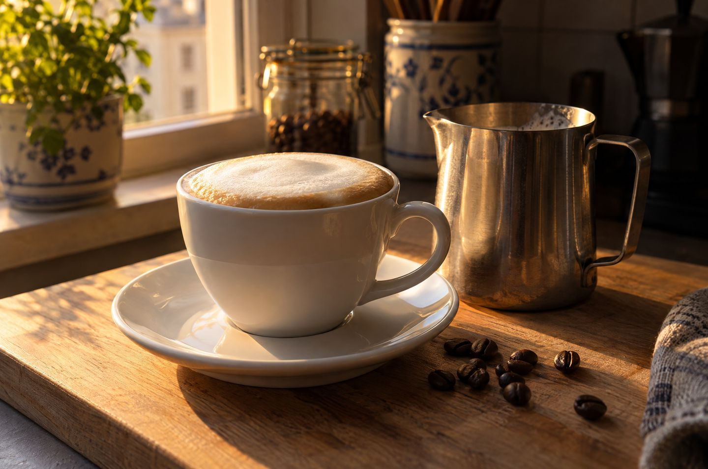

Kaffee-Rezepte
Vier Getränke, die zu Hause gelingen. Mit den Mengen, die Röster und Barista-Verbände nennen, und einem Schnittbild, das zeigt, was in der Tasse steckt.
Ein Cappuccino besteht aus 25 ml Espresso und 100 ml Milch, die auf etwa 125 ml aufgeschäumt wird. Für einen Flat White nimmst du einen doppelten Espresso und feinporige Milch ohne Schaumhaube, zusammen ein Drittel Espresso und zwei Drittel Milch. Ein Iced Latte ist ein doppelter Espresso über einem Glas mit Eis und 150 ml kalter Milch. Cold Brew setzt du mit 100 Gramm grob gemahlenem Kaffee auf einen Liter kaltes Wasser an und lässt ihn 6 bis 24 Stunden ziehen.
Die Grundlage: ein Espresso.
Drei der vier Rezepte beginnen mit Espresso. Das italienische Espresso-Institut beschreibt ihn so:
Ein doppelter Espresso ist die doppelte Menge, also etwa 50 ml. Ein Vollautomat macht ihn auf Knopfdruck, am Siebträger bestimmst du jeden Schritt selbst. Welche Maschine zu dir passt, steht im Kaffee-Ratgeber, die fünf Handgriffe am Siebträger unter Barista zu Hause.
Cappuccino.
Espresso, heiße Milch und eine Haube aus Schaum. Die Mengen stammen vom italienischen Espresso-Institut, das den Cappuccino zertifiziert.
Tasse vorwärmen
Mit heißem Wasser füllen und wieder ausgießen. Die Tasse fasst 150 bis 160 ml.
Espresso zubereiten
25 ml Espresso direkt in die Tasse laufen lassen.
Milch aufschäumen
100 ml kalte Milch mit Dampf aufschäumen, bis sie etwa 55 Grad warm ist. Aus 100 ml werden dabei rund 125 ml.
Eingießen
Die Milch in einem Zug auf den Espresso gießen. Erst fließt die Milch, zum Schluss der Schaum.
- Mit dem Vollautomaten
- Geräte mit Milchsystem machen den Cappuccino auf Knopfdruck. Welche das können, steht in der Übersicht aller Maschinen.
- Ohne Dampfdüse
- Milch im Topf erwärmen, nicht kochen, und mit einem Milchaufschäumer aufschlagen.
- Nicht zu heiß
- Das Institut nennt etwa 55 Grad. Spätestens bei 65 Grad ist Schluss, sonst verliert die Milch ihre Süße. Faustregel: Die Kanne ist außen so heiß, dass du sie gerade noch halten kannst.

Flat White.
Kräftiger als ein Cappuccino und ohne Schaumhaube. Daher der Name: flach. Australien und Neuseeland beanspruchen beide, ihn erfunden zu haben.
Doppelten Espresso zubereiten
In eine dickwandige Tasse mit 160 bis 165 ml. Sie ist kleiner als eine Cappuccino-Tasse.
Milch feinporig aufschäumen
Die Dampfdüse bleibt unter der Oberfläche. So entsteht kein fester Schaum, sondern samtige Milch.
Sanft eingießen
Die Milch langsam in den Espresso gießen, bis die Crema nach oben steigt. Die Tasse ist dann randvoll.
- Unterschied zum Cappuccino
- Mehr Espresso, weniger Schaum. Die Milch mischt sich mit dem Kaffee, statt als Haube obenauf zu liegen.
- Wie viel Milch
- Bei einem doppelten Espresso mit etwa 50 ml passen rechnerisch rund 100 ml Milch in die Tasse.
- Mit dem Vollautomaten
- Manche Geräte haben eine eigene Taste für Flat White. Sonst: doppelten Espresso wählen und wenig Milchschaum dazugeben.
Iced Latte.
Der schnellste kalte Kaffee: Der heiße Espresso trifft auf Eis und kalte Milch. Das Rezept stammt vom Hersteller Smeg.
Glas füllen
Ein hohes Glas großzügig mit Eiswürfeln füllen und 150 ml kalte Milch dazugießen.
Doppelten Espresso zubereiten
In eine große Tasse laufen lassen, am Siebträger oder am Vollautomaten.
Darübergießen
Den frischen Espresso über Eis und Milch gießen. Kurz umrühren oder die Schichten erst ansehen.
- Süßer
- Vanille oder ein Schuss flüssige Sahne machen ihn milder. Zucker löst sich im heißen Espresso besser als im kalten Glas.
- Pflanzendrink
- Statt Milch geht auch ein Pflanzendrink, zum Beispiel aus Hafer.
- Lieber grün
- Dasselbe Prinzip mit Matcha steht im Matcha-Ratgeber, Eistee im Tee-Ratgeber.
Cold Brew.
Kaffee, der nie heiß wird. Er zieht stundenlang in kaltem Wasser und braucht keine Maschine. Das Rezept stammt von der Rösterei Dallmayr.
Kaffee grob mahlen
100 Gramm, deutlich gröber als für Filterkaffee. Je länger er zieht, desto gröber.
Mit kaltem Wasser ansetzen
Einen Liter kaltes Wasser dazugeben, umrühren und das Gefäß abdecken. Eine French Press oder ein großes Schraubglas genügt.
Ziehen lassen
6 bis 24 Stunden, bei Zimmertemperatur oder im Kühlschrank. Länger heißt kräftiger.
Filtern
Durch ein feines Sieb oder einen Papierfilter gießen. In der French Press den Stempel langsam herunterdrücken.
- Haltbar
- Im Kühlschrank hält sich Cold Brew drei bis fünf Tage.
- Servieren
- Pur über Eiswürfel, oder mit Milch und Pflanzendrink.
- Mahlgrad
- Vorgemahlener Filterkaffee ist meist zu fein. Besser ganze Bohnen kaufen und grob mahlen (lassen).
Cold-Brew-Rechner.
Wie viel Kaffee brauchst du für dein Gefäß, und für wie viele Gläser reicht es?
Gerechnet mit 100 Gramm Kaffee je Liter Wasser. Das Kaffeemehl saugt einen Teil des Wassers auf, deshalb kommen etwas weniger Gläser heraus, als das Gefäß fasst. Wir rechnen mit rund einem Fünftel Verlust, das ist ein Erfahrungswert und keine Angabe der Rösterei.
Was du dafür brauchst.
Die Links führen zu einer Suche bei Amazon. Die Maschinen selbst stehen im Kaffee-Ratgeber.Anzeige
Häufige Fragen.
Wie viel Milch kommt in einen Cappuccino?
100 ml kalte Milch auf 25 ml Espresso. Beim Aufschäumen werden aus der Milch etwa 125 ml. So beschreibt es das italienische Espresso-Institut.
Was ist der Unterschied zwischen Flat White und Cappuccino?
Ein Flat White hat mehr Espresso und kaum Schaum: ein Drittel Espresso, zwei Drittel feinporige Milch, in einer kleineren Tasse. Ein Cappuccino trägt eine sichtbare Schaumhaube.
Wie heiß soll die Milch sein?
Etwa 55 Grad nennt das italienische Espresso-Institut. Über 65 Grad verliert die Milch ihre Süße.
Wie mache ich einen Iced Latte?
Ein Glas mit Eiswürfeln füllen, 150 ml kalte Milch dazugießen und einen doppelten Espresso darübergießen.
Wie lange muss Cold Brew ziehen?
6 bis 24 Stunden, bei Zimmertemperatur oder im Kühlschrank. Je länger, desto kräftiger. Auf einen Liter Wasser kommen 100 Gramm grob gemahlener Kaffee.
Wie lange hält Cold Brew?
Gefiltert und im Kühlschrank drei bis fünf Tage.
Brauche ich für diese Rezepte eine teure Maschine?
Für Cold Brew brauchst du gar keine. Für Cappuccino, Flat White und Iced Latte brauchst du Espresso: aus einem Vollautomaten, einem Siebträger oder einem Espressokocher. Welche Maschine zu dir passt, klärt der Finder im Kaffee-Ratgeber.
Quellen.
Alle 4 Quellen anzeigenIstituto Nazionale Espresso Italiano · Siemens Hausgeräte · Smeg · Dallmayr
- Istituto Nazionale Espresso Italianoistituzionale_inei_hq_en.pdfThe Certified Italian Espresso and Cappuccino (Broschüre, englisch, PDF)
- Siemens Hausgerätesiemens-home.bsh-group.comFlat White, Kaffee-Know-how
- Smegsmeg.comIced Latte, Rezept
- Dallmayrdallmayr.comCold Brew selber machen
Geprüft am 22.11.2026. Wir haben die Rezepte nicht selbst entwickelt, sondern aus diesen Quellen zusammengetragen.